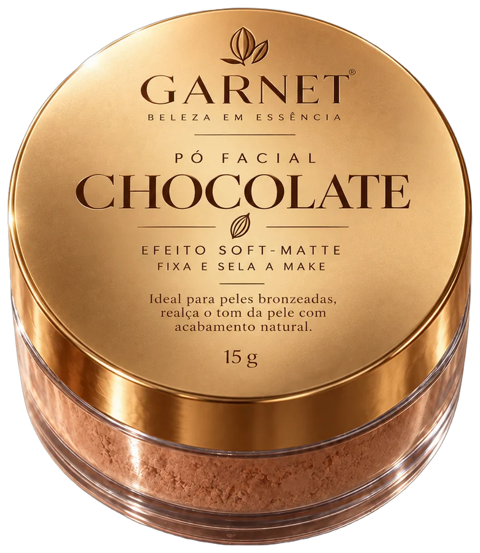
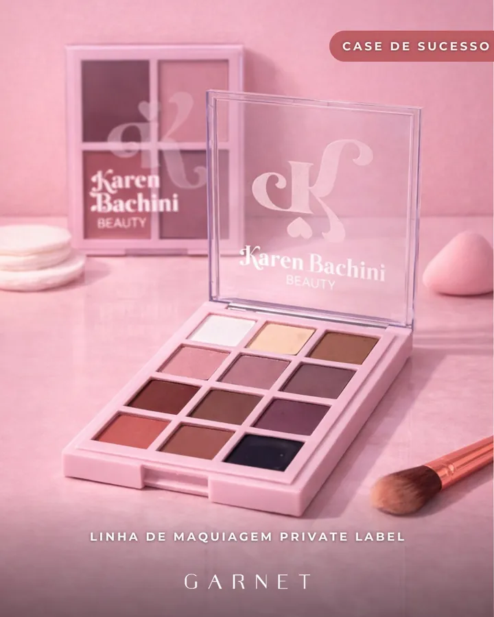
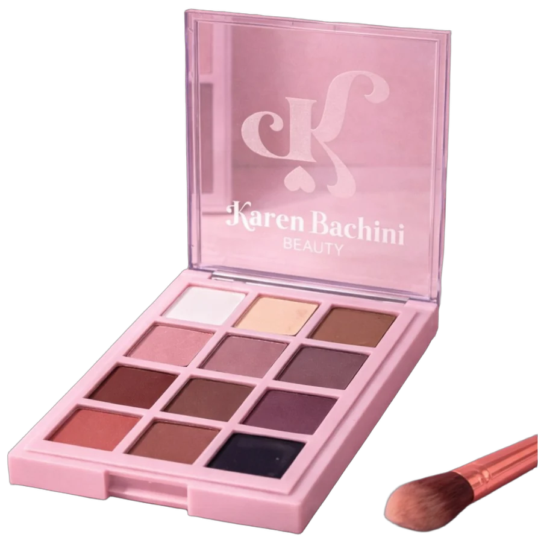
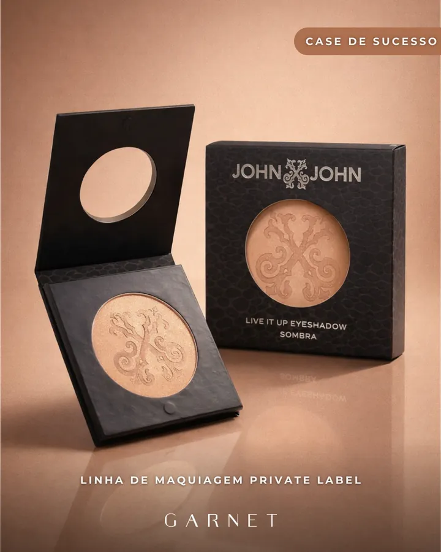
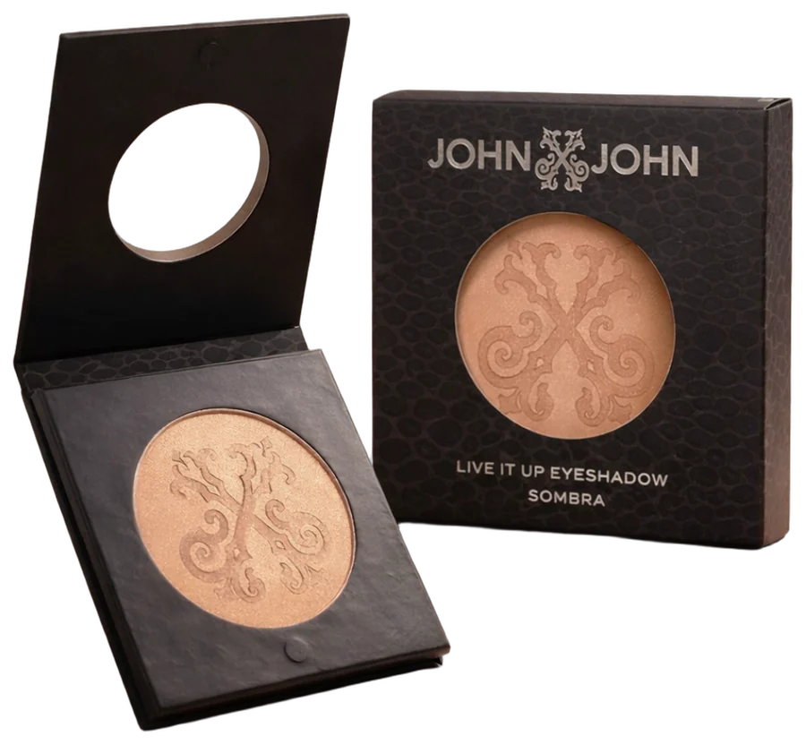

Maquiagem
Pós, blushes e sombras
Fundo removido automaticamente (IA de recorte, rodando no nosso próprio ambiente). A sombra e o brilho foram recriados para o produto “pousar” no fundo do site. Passe o mouse sobre os produtos. Os botões na barra do topo trocam entre o recorte e a foto original em qualquer ponto da página.

O caso mais difícil: pote de acrílico transparente com pó solto. O recorte manteve a transparência do pote. O pó espalhado na mesa sai e pode ser recriado em animação (veja a seção 4).


Saem o fundo rosa, a esponja, a pedra e o texto gravado “Case de sucesso / Garnet”. O pincel ficou; dá para tirar se preferirem só a paleta.


Embalagem preta sobre fundo claro: o produto ganha destaque e o off-white do site fica limpo em volta.
Use o botão “Antes / Depois” no topo para comparar com as fotos atuais. Role a página: o produto sobe um pouco mais rápido que o card (parallax).
Pós, blushes e sombras
Sombras, blushes e iluminadores
Sombras e pós prensados com relevo
Estilo das páginas de produto da MBOOM. Clique no bloco para abrir a foto original da campanha — o cenário não se perde, só sai do caminho.
Partículas na cor do produto se soltam do pote e assentam devagar. Passe o mouse no pote para uma “nuvem” de pó. Mesma técnica da poeira dourada do topo do site.
Bordas limpas nos três, inclusive no acrílico transparente do pote e na tampa da paleta. Sem retoque manual.
Cada recorte ficou entre 55 e 110 KB (WebP com transparência) — mais leve que as fotos atuais.
O processo é automático (alguns segundos por foto). Glitter e reflexos fortes podem pedir revisão pontual.